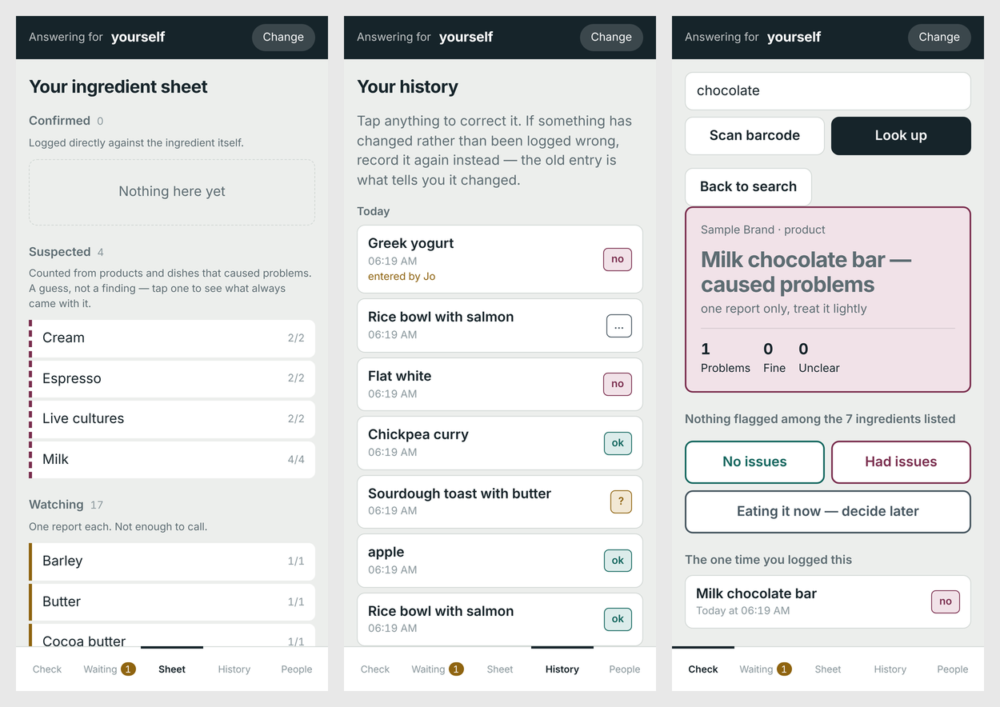

A household food log that tells you which ingredients keep turning up when something disagrees with you, and admits when it does not know. You log whether a food caused problems; Plate works out which ingredients those foods have in common and gives you a sheet you can carry. It is built for a small group (you, family, close friends) on your own server.
The idea
Most food is unknown, and the app says so. It does not assume you can eat everything until proven otherwise, or nothing until proven otherwise; both of those are guesses dressed as answers.
- Three answers, not two: no problems, had problems, or eating it now (decide later). A pending answer becomes unsure after 24 hours, and can still be corrected afterwards.
- Three kinds of thing: an ingredient, a packaged product, or a dish from a menu. A dish's ingredients are a best guess, so it is kept apart from a product.
- Confirmed and suspected are never blurred. The sheet splits into confirmed (logged against the ingredient itself), suspected (inferred from foods that caused problems, called only after at least two reports and a clear majority), watching (one report, not enough) and no trouble so far.
- It says when it cannot tell. If milk, lactose and whey always appear together, the counts cannot separate them, and the app shows that instead of picking one. There is deliberately no fitted model: with yes/no outcomes and ingredients that almost always travel together, a regression would be confidently wrong.
Getting food in
- Scan a barcode with the phone's camera. A hit is looked up on Open Food Facts; a miss drops you into the add form with the barcode filled in, so the next person finds it.
- Type what the menu says. Menus are prose, not ingredient lists, so a parser splits them up, strips cooking words and prices, and pulls out common triggers hidden inside phrases ("lemon butter sauce" also gives "butter").
- Nothing is counted until you have looked at it. Both paths show what they found as editable chips before anything is saved.
- Mistakes and changes are different things. A wrong entry is edited; a food that has stopped causing trouble is logged again, so the record of the change survives.
How it is built
- Python and FastAPI, SQLAlchemy over SQLite (Postgres by changing one setting), and a plain JavaScript front end that installs on a phone.
- Runs in Docker on a home server, reached over Tailscale or through a reverse proxy with HTTPS. The barcode reader is served by the app itself, so it works with no route to the internet.
- Invite-code sign-up for a household, and a "buddy" mode for logging on someone else's behalf.
- Exports: a plain-text avoid list that works on a phone with no signal, a one-page summary for a dietitian that carries its own caveats, and a CSV of every record.
- A smoke test of 76 checks covers the whole loop with no network.
Where it is
Working and self-hosted; the pictures above use made-up foods. Not built yet: reading ingredient labels from a photo (the text box is where it would plug in), reminders before a pending answer expires, and how much and how bad.
Suspected ingredients are arithmetic on what people report, not a diagnosis, and the exports say so on their face.
How it was made
Designed and built by Will Douglas. Food data comes from Open Food Facts (Open Database License). The barcode reader is ZXing (Apache 2.0).